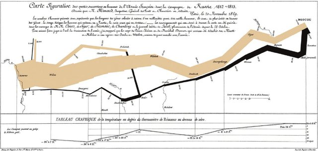

#Load packages
library(tidyverse)
library(networkD3)
library(kableExtra)I first learned about a Sankey graph from Tufte’s data visualization book (Tufte 1983). It is a heartbreaking image of Napoleon’s army’s attempt to invade Moscow, but instead of victory, thousands died through a mix of war and unhygienic and freezing weather as the marched to Moscow and back to France. My purposes for this post are much more mundane, quite unimportant relatively - to look at weightings of a project with criteria.
How can data be used to generate a Sankey graph? You need project and criteria node names arranged in terms of weights and the target and sources for links Table 2. This way nodes and links are sized according the assigned weights Figure 1 - an example of its application is in my other post for our weed horizon scan.

The package is a network package networkD3Allaire et al. (2017).
The data can be read in from an external file, you need the nodes to be listed and numbered from 0 and on up to the number of nodes in one file, the names should match the criteria and project titles Table 1.
nodes<-
structure(
list(
source = 0:7, #node numbering starts at zero
target_name = c(
"1 project",
"2 project",
"3 project",
"4 project",
"5 project",
"Proportion of work that is plant science",
"Stakeholders will benefit",
"Is not well addressed by others"
)
),
row.names = c(NA,-8L),
class = "data.frame"
)
kable(nodes %>% arrange(source), align="l", format = "pipe", padding = 2)| source | target_name |
|---|---|
| 0 | 1 project |
| 1 | 2 project |
| 2 | 3 project |
| 3 | 4 project |
| 4 | 5 project |
| 5 | Proportion of work that is plant science |
| 6 | Stakeholders will benefit |
| 7 | Is not well addressed by others |
Generate some random weights for this exercise, I am using 3 criteria, for the 5 projects so I need 15 weights.
weights<-sample(1:10, 15, replace=T)Then generate the table with project names and weights. The link colors are determined by the names on the nodes and it can have problems recognizing names as unique if the first word is the same and there are spaces. I used Project 1, Project 2, etc and it didn’t recognize the nodes as distinct until I named them 1 Project, 2 Project, etc.
target_source <-
tibble(
source_name = c(rep(
c(
"Proportion of work that is plant science",
"Stakeholders will benefit",
"Is not well addressed by others"
),
5
)),
target_name = c(rep(
c("1 project",
"2 project",
"3 project",
"4 project",
"5 project"),
3
)),
weight=as.numeric(c(weights)),
target = c(rep(c(0, 1, 2, 3, 4), 3)),
source = c(rep(c(5, 6, 7), 5))
)
kable(target_source %>% arrange(target_name), align="c", format = "pipe", padding = 2)| source_name | target_name | weight | target | source |
|---|---|---|---|---|
| Proportion of work that is plant science | 1 project | 3 | 0 | 5 |
| Is not well addressed by others | 1 project | 9 | 0 | 7 |
| Stakeholders will benefit | 1 project | 8 | 0 | 6 |
| Stakeholders will benefit | 2 project | 7 | 1 | 6 |
| Proportion of work that is plant science | 2 project | 3 | 1 | 5 |
| Is not well addressed by others | 2 project | 10 | 1 | 7 |
| Is not well addressed by others | 3 project | 6 | 2 | 7 |
| Stakeholders will benefit | 3 project | 10 | 2 | 6 |
| Proportion of work that is plant science | 3 project | 9 | 2 | 5 |
| Proportion of work that is plant science | 4 project | 7 | 3 | 5 |
| Is not well addressed by others | 4 project | 4 | 3 | 7 |
| Stakeholders will benefit | 4 project | 7 | 3 | 6 |
| Stakeholders will benefit | 5 project | 5 | 4 | 6 |
| Proportion of work that is plant science | 5 project | 2 | 4 | 5 |
| Is not well addressed by others | 5 project | 7 | 4 | 7 |
Then generate the Figure 1. Just note it is outputting and html widget, looks a lot better on a desktop screen.
sankey3<-networkD3::sankeyNetwork(Links = target_source,
Nodes = nodes,
Source = 'target',
Target = 'source',
Value = 'weight',
NodeID = 'target_name',
units = 'weight',
width = 600,
height = 800,
fontSize = 18,
LinkGroup="target_name",
fontFamily = "Georgia")
sankey3References
Allaire JJ, Gandrud C, Russell K, Yetman C 2017. networkD3: D3 JavaScript network graphs from r.
Tufte ER 1983. The visual display of quantitative information. Graphics Press, Chesire, CT.